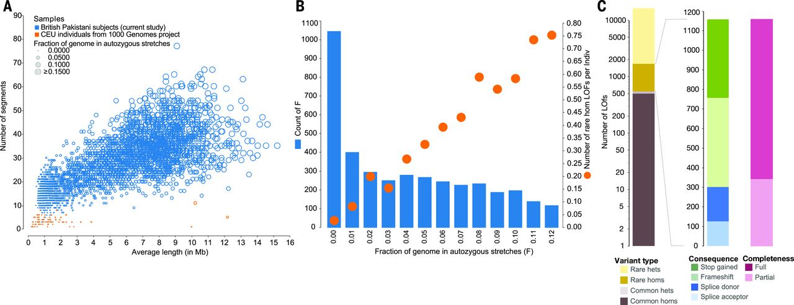
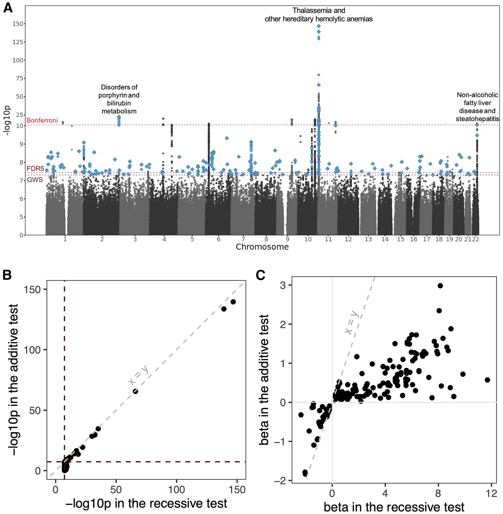
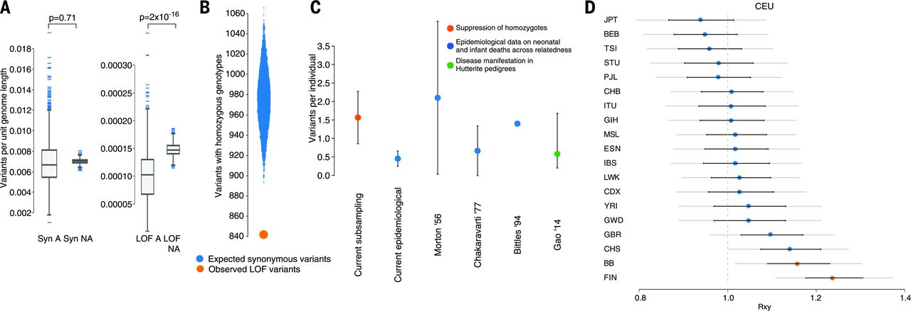

BSMS205 · Genetics
Recessive Alleles
Chapter 12 · Part II · Variation
Welcome back. Today is chapter twelve, recessive alleles in human disorders. Last week in chapter eleven we looked at dominant disorders, where one broken copy of a gene is enough to cause disease — that's haploinsufficiency. Today we flip the question. What if one bad copy is fine, but two is a disaster? That is the world of recessive disease, and it has its own logic, its own classic examples like cystic fibrosis and sickle cell, and its own surprises that only recently became visible thanks to next-generation sequencing in specific populations. Let's get started.
A question to start with
Two healthy parents.affected child.
Here is the puzzle that defined recessive genetics for a hundred years. Two healthy parents have a child with a severe genetic disease. There is no family history. Nobody on either side has it. How is that possible? In a dominant world it would be a fresh mutation, a spontaneous accident. But for many recessive diseases, the answer turns out to be different and more interesting. Both parents are silently carrying one broken copy of the same gene, perfectly healthy themselves, and the child happened to inherit the broken copy from both of them. Today we'll unpack exactly how that works.
Bridge from Chapter 11
Chapter 11 · Dominant
One bad copy → diseaseHaploinsufficiency
Visible in every generation
Chapter 12 · Recessive
Two bad copies → diseaseOne copy = healthy carrier
Often skips generations
Let's anchor today's lecture against last week's. In chapter eleven, dominant disorders, we said one broken copy of a gene is enough to break the system. That's haploinsufficiency. Today, recessive disorders play by exactly the opposite rule. One broken copy is fine — the cell just leans on the other working copy and produces enough protein. You only get disease when both copies fail. And because of that, recessive disease can hide silently across generations, then suddenly appear when two carriers happen to have a child together.
The diploid setup
2 copies
every autosomal gene · one from Mom · one from Dad
Both copies make protein → enough function
One broken, one working → still enough
Both broken → nothing to fall back on
Remember the basic biology. We are diploid organisms. Every autosomal gene comes in two copies — one from Mom, one from Dad. For most genes, one working copy makes enough protein to keep the cell happy. So if you break one allele but the other still works, you typically have no symptoms at all. You are a healthy carrier. The disease only appears when both alleles fail to produce functional protein, because at that point the cell has nothing to fall back on. That single fact — that one good copy is usually enough — is the key to understanding all of recessive genetics.
Classic recessive disorders
Disease Gene What breaks
Cystic fibrosis CFTR Chloride channel Sickle cell disease HBB Hemoglobin β-chain Tay-Sachs HEXA Lysosomal enzyme Phenylketonuria PAH Phenylalanine hydroxylase
All Mendelian · single gene · two broken copies
Here is a quick orientation. These are the textbook recessive disorders, and you've heard of most of them. Cystic fibrosis, broken chloride channel in the lung. Sickle cell disease, broken hemoglobin. Tay-Sachs, a lysosomal enzyme failure that destroys neurons. Phenylketonuria, an inability to break down phenylalanine. All four are classic Mendelian — they follow Mendel's pea plant rules cleanly. Single gene, two broken copies needed, very high penetrance. Almost every textbook example of recessive disease comes from this list.
Roadmap for today
Alleles, genotypes, and what counts as "broken"
Why recessives skip generations · carriers
Compound heterozygotes & biallelic variation
Consanguinity, autozygosity, runs of homozygosity
From Mendelian to common diseases
Selection & the genetic load
Summary & what comes next
Here is how we'll move today. First, the vocabulary — alleles, genotypes, what we mean by a variant. Second, the inheritance pattern itself, why recessives skip generations and what a carrier really is. Third, the two ways to get biallelic disease — homozygous and compound heterozygous. Fourth, consanguinity and autozygosity, where things get statistically interesting. Fifth, an important update from modern genomics — recessive alleles are not just for rare Mendelian disease, they shape common diseases too. Sixth, natural selection and the genetic load each of us carries. Then we wrap up.
§ 1
Alleles, Genotypes,
Let's get the vocabulary right first. The whole story of recessive disease hinges on what's happening at one locus across two chromosomes, so we need to be precise about it.
Three genotypes at any locus
Homozygous reference · Xref /Xref · both match referenceHeterozygous · Xref /Xalt · one variant copy = carrier Homozygous alternative · Xalt /Xalt · both copies altered
Recessive disease lives at Xalt /Xalt .
At any one locus in your genome, you can be in one of three states. Homozygous reference means both copies match the reference genome — what most people have at most positions. Heterozygous means one copy is reference and the other carries some variant — that's the carrier state for recessive disease. Homozygous alternative means both copies carry the variant. If that variant disrupts gene function, this is when disease appears. Recessive disease lives in that third state — both alleles altered, no working copy to fall back on.
What's a "variant"?
SNV · single-nucleotide variant · one base swappedIndel · small insertion or deletion · a few basesBoth can disrupt protein: stop codon, frameshift, splicing
ref: ATG · CGA · TTAT GA · TTA ← new stop
Quick definition. A variant is just a difference from the reference sequence. The two most common kinds we care about for recessive disease are single-nucleotide variants — one base swapped for another — and small insertions or deletions of just a few bases, called indels. Either kind can wreck a gene. A single base change might create a premature stop codon. A small insertion might shift the reading frame and turn the rest of the protein into nonsense. This shows the simplest case — one letter changes, and a stop codon appears in the middle of the gene. Both alleles like this and the gene is dead.
Two routes to biallelic disease
Homozygous
Same variant on both allelesSame allele from Mom & Dad
Common in consanguineous families
Compound het
Two different variants, one each alleleVariant A from Mom, variant B from Dad
Common in outbred populations
There are two routes to ending up with both copies of a gene broken — and they're worth distinguishing. First, homozygous: the exact same variant on both alleles. You inherited the same broken allele from both parents. This is more likely when your parents share recent ancestry, because they are more likely to both carry the same ancestral mutation. Second, compound heterozygous: two different variants, one on each allele, but both knock out the gene. You got variant A from Mom and variant B from Dad. Either route ends up at the same place — no working protein — but the genetics underneath looks different. Compound heterozygotes are common in outbred populations like Iceland and the ExAC database, where studies have identified one hundred sixty-seven and two hundred ninety-nine such genes respectively.
§ 2
Why It Skips
Now to one of the hallmark features of recessive disease — the way it seems to vanish for generations and then suddenly reappear. This is what makes recessive disorders genetically tricky and emotionally devastating for the families involved.
The carrier · silent but loaded
One broken allele · one working allele
Working allele makes enough protein
No symptoms · normal life · normal labs
But: 50% chance of passing the bad allele to each child
Here's the carrier. Genotype heterozygous — one broken allele, one working allele. The working allele makes enough protein to keep the cell happy, so the carrier shows no symptoms. Their bloodwork looks normal. They live a normal life. They might never know they carry the variant. But — and this is the key — every time they have a child, they pass on the broken allele with fifty percent probability. The mutation is silently traveling down the generations, untested and unseen, until it meets another copy of itself in someone else's family.
Two carriers · one cross
Mom × Dad A (working) a (broken)
A AA · healthy Aa · carrier a Aa · carrier aa · affected
Two carriers → 1 in 4 children affected · 2 in 4 carriers · 1 in 4 clear
Here's the Punnett square that every genetics student draws. Both parents are carriers — Aa. Each child gets one allele from each parent. The four equally-likely outcomes — capital A capital A, capital A lowercase a, lowercase a capital A, and lowercase a lowercase a. So twenty-five percent of the children are unaffected and not even carriers. Fifty percent are healthy carriers like their parents. And twenty-five percent — one in four — are homozygous for the broken allele and affected with the disease. That one in four is why families with no history at all can suddenly have an affected child.
Why it looks like it skips
Carriers are invisible in pedigrees · no phenotype
Disease only appears when two carriers meet
For rare recessives, that match-up is rare
So affected people cluster · then nothing for generations
The allele never left.silent .
From a family's perspective, the disease seems to skip generations. Grandparents healthy. Parents healthy. Then a child is affected. What's actually happening? The allele was there the whole time. It traveled silently through the carriers — grandfather, mother, child — and only became visible when it met another copy of itself. For a rare allele, the chance of two carriers having children together is small, so affected individuals cluster in pedigrees and then vanish for generations. The allele didn't leave. It was just hiding in the heterozygous state, waiting for a partner.
§ 3
Consanguinity
Now to one of the most genetically informative situations in human biology — what happens when relatives marry and have children. This is not a moral question, it's a statistical one, and it has powered some of the biggest discoveries in recessive disease.
Consanguinity · the same broken tool
Consanguinity · marriage between close relativesShared great-grandparents → shared rare alleles
Same mutation flows down both family lines
Child inherits two copies of the same ancestral allele
Here's the logic. Imagine your parents are second cousins. They share a pair of great-grandparents. Any rare mutation those great-grandparents carried has a real chance of being passed down both family lines — through one branch to one parent, through the other branch to the other parent — and then both into you. You end up homozygous for the same ancestral broken allele. It's like inheriting the same broken tool from both sides of the family. That's consanguinity, and it dramatically raises the chance of recessive disease for any allele that happens to be carried in the family.
Autozygosity · IBD on both chromosomes
Autozygous region · both chromosomes identical by descentBoth copies trace to a single recent ancestor
Long, contiguous stretches — runs of homozygosity (ROH)
Any rare variant in that region is automatically homozygous
The technical term is autozygosity. An autozygous region is a stretch of DNA where both of your chromosomes are identical by descent — both copies came from the same recent ancestor. We see these as long contiguous stretches of homozygosity in the genome, called runs of homozygosity, or R O H. The crucial feature: anywhere inside an autozygous segment, every variant is automatically homozygous. So if your great-grandfather happened to carry a rare loss-of-function variant in some gene, and that variant lives inside your autozygous region, you are now homozygous for it — whether or not it causes disease.
The British Pakistani cohort
32%
offspring of 2nd cousins or closer
n = 3,222 Pakistani-heritage adults · UK
Avg 5.6% of coding genome autozygous
Orders of magnitude more than Europeans
Narasimhan et al. 2016, Science
Here is where the science gets exciting. In the UK, British Pakistani and Bangladeshi communities have a long tradition of marriage between cousins — about thirty-two percent of individuals in these communities are offspring of second cousins or closer relatives. A landmark study sequenced three thousand two hundred twenty-two Pakistani-heritage adults and found that on average five point six percent of their coding genome was autozygous. That's enormous — orders of magnitude higher than in outbred European populations, where there's almost no autozygosity at all. This makes the cohort uniquely valuable for finding recessive variants.
ROH distribution · the natural experiment

Figure 1. Pakistani-heritage individuals (blue) carry many long autozygous segments; Europeans (orange) have almost none. As autozygosity rises, the count of rare homozygous loss-of-function (rhLOF) genotypes per person rises with it. Source: Narasimhan et al. 2016, Science .
Here is the data. On the left panel, each dot is a person. The Pakistani-heritage individuals in blue have many long autozygous segments — many people have over thirty segments averaging five to ten megabases. The Europeans in orange have almost none. On the right panel, you see the consequence: as the fraction of the genome that is autozygous goes up on the x-axis, the number of rare homozygous loss-of-function genotypes per person goes up on the y-axis. People with about six percent autozygosity carry around half a rare knockout per person. People with ten percent carry nearly point eight. This is a natural experiment that reveals which genes can tolerate complete knockout in humans.
The treasure trove
1,111
rare homozygous LOF genotypes
781
distinct genes knocked out
94.9% sat inside autozygous segmentsMost variants are rare · none would surface in outbred cohorts
And the punchline. Across these three thousand two hundred twenty-two individuals, the team found one thousand one hundred eleven rare homozygous loss-of-function genotypes hitting seven hundred eighty-one distinct genes. Ninety-four point nine percent of these knockouts sat inside autozygous segments — confirming the statistical logic we just walked through. None of these knockouts would have surfaced in an outbred cohort, because the same rare allele almost never lands on both chromosomes by chance. This is a treasure trove for human genetics — it tells us, gene by gene, which ones are dispensable when both copies are gone, and which ones cause disease.
§ 4
From Mendelian
Traditionally we thought of recessive disease as a small box — single-gene disorders, dramatic phenotypes, neat Mendelian inheritance. The new sequencing data is showing us that's only half the story. Recessive alleles also shape common, complex diseases.
The traditional view
Recessive = Mendelian · single-gene · high penetrance
Cystic fibrosis · sickle cell · Tay-Sachs · PKU
Break both copies → almost always disease
Clean pedigrees · clear inheritance
For most of the twentieth century, recessive disease meant one thing — Mendelian disorders. Single gene, dramatic phenotype, almost full penetrance. Cystic fibrosis, sickle cell, Tay-Sachs, P K U. If you broke both copies of the gene, you got the disease. The pedigrees were clean. The inheritance was clear. And that gave us the textbook picture of recessive genetics for a hundred years.
Mendelian example · WDR62 microcephaly
Brain malformations: microcephaly, pachygyria, lissencephaly
WDR62 · neural progenitor cell divisionMultiple consanguineous families · different mutations
Genetic heterogeneity · same disease, different broken alleles
Bilgüvar et al. 2010, Nature
Here's a textbook Mendelian example from modern sequencing. Several consanguineous families had children with severe brain malformations — microcephaly, abnormally small heads, pachygyria, unusually thick simplified brain folds, and lissencephaly, smooth brain lacking normal folding. Whole-exome sequencing identified homozygous mutations in W D R sixty-two — a gene critical for neural progenitor cell division. Without this protein, the cells that build the developing brain can't proliferate properly. The interesting twist is that different families had different mutations — frameshifts, nonsense changes, missense variants — but all knocked out the same gene. That's genetic heterogeneity, and it's how recessive disease usually looks in practice.
The new view · recessive in common disease
44,190
British Pakistani & Bangladeshi
185
recessive loci · 898 diseases
Heng et al. 2025, Am J Hum Genet
Now the modern surprise. A larger study of forty-four thousand one hundred ninety British Pakistani and Bangladeshi individuals tested for recessive associations across the genome, against eight hundred ninety-eight common diseases pulled from electronic health records. They found one hundred eighty-five recessive loci — many of them completely novel — only detectable because of the high autozygosity in this cohort. These are not rare Mendelian disorders. These are everyday conditions like hypertension and fatty liver disease. Recessive alleles are quietly shaping common disease, and we've been missing them.
Manhattan plot · recessive associations

Figure 2. Each point = a variant tested under a recessive model against an EHR-derived disease. Three Bonferroni peaks: NAFLD on chr22, porphyrin / bilirubin metabolism on chr2, thalassemia / hemolytic anemias on chr11. Source: Heng et al. 2025, Am J Hum Genet .
Here is the genome-wide picture. Each point is a variant tested for recessive association with one of the eight hundred ninety-eight diseases. The y-axis is the strength of evidence — minus log ten p-value. Dashed lines mark the genome-wide and Bonferroni significance thresholds. Three big peaks pop out — variants associated with non-alcoholic fatty liver disease on chromosome twenty-two, disorders of porphyrin and bilirubin metabolism on chromosome two, and thalassemia and hereditary hemolytic anemias on chromosome eleven. These are recessive disease architectures hiding in plain sight, and they only became visible because of the high autozygosity in this cohort.
Two example hits
Gene Trait Effect (homozygous)
SGLT4 Hypertension OR = 0.2 · 80% lower risk PNPLA3 Fatty liver disease OR = 1.3 · increased risk
These would be invisible in additive-model GWAS.
Two examples worth knowing. First, S G L T four — a missense variant where homozygotes had an eighty percent lower risk of hypertension. Odds ratio of point two. That is a huge protective effect for a common disease. The variant likely changes how the kidney handles sodium. Second, P N P L A three — a recessive variant strongly associated with non-alcoholic fatty liver disease. Odds ratio one point three, p value two times ten to the minus twelve. Critically, both of these would have been missed by a traditional G W A S that assumes an additive genetic model. They only show up when you specifically test for recessive effects.
§ 5
Selection &
Now let's zoom out and ask why deeply harmful recessive alleles don't just accumulate to high frequency. The answer is natural selection — but the way selection works on recessive alleles has its own logic.
Why deleterious recessives stay rare
Carriers are healthy · selection can't see them
Selection only acts when both copies meet → aa
aa removed → next generation has fewer a alleles
But carriers keep allele circulating for centuries
Here's the logic. If a recessive allele is deleterious, selection only acts on it when both copies meet up in the same person. Carriers are healthy, so selection can't see them at all — heterozygotes pass the allele on to the next generation just like a reference allele. Only homozygotes get removed. That makes selection against recessive alleles weak and slow, because the allele is mostly hiding in heterozygous form. This is also why deleterious recessive alleles can persist in populations for hundreds or thousands of generations even though they reduce fitness when homozygous.
Selection against rhLOF · the deficit

Figure 3. A 13.7% deficit of rare homozygous loss-of-function genotypes vs frequency-matched synonymous controls — the missing variants likely caused embryonic / fetal loss. Estimated load: ~1.6 lethal-equivalents per person. Source: Narasimhan et al. 2016, Science .
Here's the quantitative side. The Narasimhan team compared sixteen thousand seven hundred eight rare loss-of-function variants to frequency-matched synonymous variants — the synonymous ones don't disrupt protein, so they're a neutral control. They found a thirteen point seven percent deficit of rare homozygous knockouts compared to expectation. What happened to the missing ones? They likely caused embryonic or fetal loss before the individuals could be sampled as adults. By modeling that deficit, they estimated each person carries about one point six recessive lethal-equivalent variants — mutations that would cause death or severe disease if homozygous. This matches independent estimates from infant mortality data and Hutterite pedigrees.
The number to remember
~1.6
recessive lethal-equivalents · per person
Each of us carries hidden lethal alleles
Different variants in different people · spread across the genome
Manifests as pregnancy loss in consanguineous unions
Here's the number that should stick with you. About one point six. On average, every human being carries the equivalent of one point six recessive alleles that would be lethal if you got two copies. Different people carry different ones — your hidden lethal alleles are different from mine. They're spread across the whole genome. We get away with it because we're heterozygous at all those positions, and one good copy is enough. But in consanguineous unions, where the chance of two copies meeting goes up sharply, this hidden burden manifests as increased rates of pregnancy loss and infant mortality.
Not every knockout is bad · PRDM9
Healthy mother · homozygous LOF in PRDM9
PRDM9 · meiotic recombination hotspot specificationEssential in mice · dispensable in this humanThree healthy children · normal life
"Loss of function" ≠ "disease."
And one more important nuance. Not every knockout causes disease. The Narasimhan study identified a healthy mother who was homozygous for a complete loss-of-function mutation in P R D M nine — a gene that controls where chromosomes recombine during meiosis. P R D M nine is essential in mice. Mice without it are sterile. But this woman was healthy, fertile, and had three healthy children. Some genes that look essential in animal models turn out to be dispensable in humans, or have backup pathways that compensate. This is a reminder to be careful when interpreting predicted loss-of-function variants — context matters, and human biology doesn't always follow mouse biology.
§ 6
Clinical &
Let's tie this all back to the clinic and to why this work matters for diverse human populations, including, most relevantly for us, Korean populations.
Why diverse populations matter
European-ancestry cohorts dominate genomics
Outbred populations → almost no autozygosity
Recessive associations remain invisible
Consanguineous & founder populations reveal hidden architecture
Here's a point worth dwelling on. Most genomics has been done in European-ancestry cohorts that are heavily outbred — meaning almost no autozygosity. In those cohorts, recessive disease architecture is mostly invisible, because the same rare variant almost never ends up on both chromosomes. Studying consanguineous populations like British Pakistanis, or founder populations like Finnish or Ashkenazi Jewish, gives us a fundamentally different genetic lens. It's not just about ancestry — it's about studying populations whose demographic histories make recessive variants visible. Without that diversity, we miss huge swaths of disease biology.
Korean recessive disease landscape
Korea: low formal consanguinity, but population isolates exist
Founder effects in some lineages → recurring rare alleles
Korean-specific variants poorly represented in gnomAD
Korean biobanks now closing the gap · KoGES, KBA, KCDC
Closer to home — Korea. We don't have the same level of formal cousin marriage as the British Pakistani cohort, but Korea has its own genetic structure. Geographic isolates, regional founder effects, recurring rare alleles in particular lineages. And historically, Korean genetic variation has been under-represented in big resources like gnomAD, which means rare Korean recessive variants were invisible to clinicians using global databases. Korean biobanks like KoGES and the Korean Biobank Array are now closing that gap, and we're starting to see Korean-specific recessive associations emerge. This is why population diversity in genomics is not just an ethical concern — it's a scientific necessity for taking care of Korean patients.
Clinical applications
Carrier screening · identify at-risk couples before pregnancyGenetic counseling · explain 1-in-4 risk to familiesPrenatal & preimplantation diagnosisDrug targets · protective LOFs become therapy ideas (cf. PCSK9)
And finally, why this matters in the clinic. Four directions. Carrier screening — testing prospective parents for known recessive alleles before pregnancy, especially in populations with elevated carrier frequencies. Genetic counseling — explaining the one-in-four risk to families with one affected child. Prenatal and preimplantation diagnosis — when a couple knows they are both carriers. And, most exciting, drug development. When a natural homozygous knockout protects against disease — like P C S K nine knockouts protecting against high cholesterol, leading to P C S K nine inhibitor drugs — those genes become therapeutic targets. The S G L T four hypertension finding we saw earlier is exactly the same logic. This is human genetics-guided drug development.
§ 7
Summary
Let's pull the threads together.
What to take away
Recessive disease needs both copies broken · carriers are healthy
Two routes: homozygous & compound heterozygous
Consanguinity → autozygosity → ROH reveal recessive variants
Recessives shape common disease too · 185 loci, 898 traits
Each person carries ~1.6 recessive lethal-equivalents
Five takeaways. One — recessive disease requires both copies of a gene to be broken, and carriers with one broken copy are typically healthy. Two — biallelic disease comes through two routes, homozygous when the same variant lands on both alleles, and compound heterozygous when two different variants knock out the same gene. Three — consanguinity creates long autozygous regions, runs of homozygosity, that act as a natural lens on recessive variation. The British Pakistani cohort revealed eleven hundred eleven rare homozygous knockouts in seven hundred eighty-one genes. Four — recessive alleles aren't just for rare Mendelian disease. They shape common diseases too, with the Heng study finding one hundred eighty-five loci across eight hundred ninety-eight common conditions. Five — selection keeps deleterious recessives rare but not absent, and each of us carries about one point six recessive lethal-equivalents in our genomes.
The arc · single letters → bigger questions
Ch 11 · dominant · one bad copy
Ch 12 · recessive · two bad copies
Both · single-nucleotide & small indels
Next · what about big rearrangements ?
Step back and look at the arc of the last two lectures. Chapter eleven, dominant disease — one bad copy is enough. Chapter twelve, today, recessive disease — you need two bad copies. In both cases, we've been talking about single-nucleotide variants and small indels. Single letters changing. Tiny insertions and deletions of a few bases. But the genome can break in much bigger ways than that. Whole regions can be deleted. Chunks can be duplicated, inverted, or moved to a different chromosome. That's a different category of variation, and it brings its own logic and its own diseases.
Next lecture
We've covered single letters.big rearrangements ?
Chapter 13 · Structural Variations
One question to leave you with. We've spent two lectures on single-letter changes and small indels. But what happens when a whole megabase of DNA gets deleted? Or duplicated? Or flipped end-to-end? These structural variations don't always behave like simple recessive or dominant disorders, and they require different sequencing technology to detect. That's the story of chapter thirteen, structural variations. See you next time.